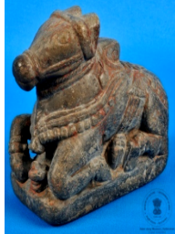

🔇 Is bhasha me is vastu ka audio abhi uplabdh nahi hai.
1. XL - 8: एक नंदी की आकृति

1. XL - 8
नंदी की पत्थर की प्रतिमा, उसी आधार पर नंदी के सामने एक छोटा शिवलिंग स्थापित है। गले में एक छोटी घंटी बंधी हुई है। यह प्रतिमा शिल्पकला की अद्भुत निपुणता को दर्शाती है। नंदी को नंदिकेश्वर या नंदिदेव भी कहा जाता है। नंदी, हिन्दू देवता भगवान शिव के वाहन हैं। लगभग सभी शिव मंदिरों में बैठे हुए नंदी की पत्थर की मूर्तियाँ होती हैं, जो प्रायः मुख्य गर्भगृह की ओर मुख किए रहती हैं। आगमों में नंदी का वर्णन जूआन्थ्रोपोमॉर्फिक (पशु-मानव संयुक्त) रूप में मिलता है, जिसमें उनका सिर बैल का है और चार हाथ हैं, जिनमें वे मृग, परशु, गदा धारण किए हुए तथा अभयमुद्रा में दर्शाए गए हैं। वाहन रूप में नंदी को शिव मंदिरों में सर्वत्र बैठे हुए बैल के रूप में चित्रित किया जाता है। इसका उद्गम भारत से हुआ और यह 16वीं शताब्दी का है।
1. XL - 8: एक नंदी की आकृति
1. XL - 8
नंदी की पत्थर की प्रतिमा, उसी आधार पर नंदी के सामने एक छोटा शिवलिंग स्थापित है। गले में एक छोटी घंटी बंधी हुई है। यह प्रतिमा शिल्पकला की अद्भुत निपुणता को दर्शाती है। नंदी को नंदिकेश्वर या नंदिदेव भी कहा जाता है। नंदी, हिन्दू देवता भगवान शिव के वाहन हैं। लगभग सभी शिव मंदिरों में बैठे हुए नंदी की पत्थर की मूर्तियाँ होती हैं, जो प्रायः मुख्य गर्भगृह की ओर मुख किए रहती हैं। आगमों में नंदी का वर्णन जूआन्थ्रोपोमॉर्फिक (पशु-मानव संयुक्त) रूप में मिलता है, जिसमें उनका सिर बैल का है और चार हाथ हैं, जिनमें वे मृग, परशु, गदा धारण किए हुए तथा अभयमुद्रा में दर्शाए गए हैं। वाहन रूप में नंदी को शिव मंदिरों में सर्वत्र बैठे हुए बैल के रूप में चित्रित किया जाता है। इसका उद्गम भारत से हुआ और यह 16वीं शताब्दी का है।
1 XL - 8: నంది విగ్రహం
1 XL - 8
ఈ విగ్రహం 16వ శతాబ్దానికి చెందిన భారతీయ కళాఖండం. ఇది రాతితో చెక్కబడిన నంది బొమ్మ. నంది మెడ చుట్టూ ఒక చిన్న గంట ఉంది. నంది ముందు, అదే పీఠంపై ఒక చిన్న శివలింగం కూడా ఉంది, ఇది కళాత్మక నైపుణ్యాన్ని ప్రదర్శిస్తుంది. నందీశ్వరుడు లేదా నందిదేవుడు అని కూడా పిలువబడే నంది, హిందూ దేవుడైన శివుని వాహనంగా కొలుస్తారు. ప్రపంచవ్యాప్తంగా ఉన్న దాదాపు అన్ని శివాలయాలలో కూర్చున్న భంగిమలో ఉన్న నంది రాతి విగ్రహాలు సాధారణంగా ప్రధాన మందిరం వైపు చూస్తూ కనిపిస్తాయి. ఆగమాలలో నందిని ఎద్దు తల, నాలుగు చేతులతో (జింక, గొడ్డలి, గద మరియు అభయముద్రతో) వర్ణించారు, అయితే ఆలయాలలో మాత్రం కూర్చున్న ఎద్దు రూపంలో చిత్రీకరిస్తారు.
1.ایکسایل- 8:نندی کا مجسمہ
1.ایکسایل- 8
سنگِ مرمر سے تراشا گیا گائے کا مجسمہ ، جس کے دائیں جانب بال کرشنہ اور بائیں جانب گائے کا بچہ موجود ہے۔ گائے کا بچہ گائے کے ایک تھن سے دودھ پی رہا ہے، جبکہ کرشنہ اپنے دائیں ہاتھ سے گائے کے دودھکے برتن کوپکڑے ہوئے ہیں۔گائے کرشنہ اور گائے کا بچہ کا یہ منظر ہندو مذہب میں ایک نہایت مقدس اور طاقتورعلامتسمجھا جاتا ہے، جو کرشنہ کے الوہی چرواہے کے کردار، ان کی پرورش و محافظت کی صفت اور بھکتوں پر شفقت و رحمت کی یاد دہانی کراتا ہے۔کرشنہ کو اکثر گووندیا گوپالکے نام سے پکارا جاتا ہے، جس کا مطلب ہے گایوں کا محافظ۔ یہ لقب ان کی ان صفات کی عکاسی کرتا ہے جن میں وہ ان جانوروں کے لیے محبت شفقت اور دیکھ بھال کا مظاہرہ کرتے ہیں۔ہندو روایت میں گائے دولتزرخیزی اور زندگی بخش دودھ کی علامت سمجھی جاتی ہے۔ اس طرح کرشنہ کا گایوں سے تعلقخوشحالی فیاضی اور برکت کی ایک ہمہ گیر علامت بن جاتا ہے۔یہ سنگِ مرمر کا مجسمہ ہندوستان سے تعلق رکھتا ہے اور بیسویں صدی سے ہے۔
5. ایم ایس-4556: گلدان
سبز مائل سیاہ رنگ کا گول مٹی کا گلدان، جس کی گردن کے حصے پر کھجور کے پتوں اور پودوں کے نقش ابھار دار انداز میں بنائے گئے ہیں۔ اس منظر میں ایک مگرمچھ کو دکھایا گیا ہے جو ایک افریقی لڑکی کی طرف بڑھ رہا ہے۔وہ افریقی لڑکی اپنے دائیں ہاتھ میں ایک چھوٹا برتن پکڑی ہوئی ہے۔ اس نے زرد اور نارنجی رنگ کا لباس پہن رکھی ہے، گردن میں سنہری ہار اور دائیں ہاتھ میں سنہری چوڑیاں پہنی ہوئی ہیں۔مگرمچھ کے سر کے قریب آٹھ پھل بنے ہوئے ہیں، اور اس کی دم گلدان کی گردن کو چھو رہی ہے۔ مگرمچھ کی تھوتھنی کا نچلا حصہ نارنجی رنگ میں رنگا گیا ہے۔یہ گلدان فرانس سے تعلق رکھتا ہے، مٹی سے تیار کیا گیا ہے، اس گلدان کا تعلق بیسویں صدی سے ہے
5. ایم ایس-4556: گلدان
سبز مائل سیاہ رنگ کا گول مٹی کا گلدان، جس کی گردن کے حصے پر کھجور کے پتوں اور پودوں کے نقش ابھار دار انداز میں بنائے گئے ہیں۔ اس منظر میں ایک مگرمچھ کو دکھایا گیا ہے جو ایک افریقی لڑکی کی طرف بڑھ رہا ہے۔وہ افریقی لڑکی اپنے دائیں ہاتھ میں ایک چھوٹا برتن پکڑی ہوئی ہے۔ اس نے زرد اور نارنجی رنگ کا لباس پہن رکھی ہے، گردن میں سنہری ہار اور دائیں ہاتھ میں سنہری چوڑیاں پہنی ہوئی ہیں۔مگرمچھ کے سر کے قریب آٹھ پھل بنے ہوئے ہیں، اور اس کی دم گلدان کی گردن کو چھو رہی ہے۔ مگرمچھ کی تھوتھنی کا نچلا حصہ نارنجی رنگ میں رنگا گیا ہے۔یہ گلدان فرانس سے تعلق رکھتا ہے، مٹی سے تیار کیا گیا ہے، اس گلدان کا تعلق بیسویں صدی سے ہے
1. XL - 8: নন্দীর একটি মূর্তি
1. XL - 8
নন্দীর পাথরের মূর্তি, একই বেদির উপর নন্দীর সামনে একটি ছোট শিবলিঙ্গ স্থাপিত রয়েছে। গলায় একটি ছোট ঘণ্টা বাঁধা আছে। এই মূর্তিটি ভাস্কর্যশিল্পের অপূর্ব নৈপুণ্য প্রকাশ করে। নন্দীকে নন্দিকেশ্বর বা নন্দিদেব নামেও ডাকা হয়। নন্দী হলেন হিন্দু দেবতা ভগবান শিবের বাহন। প্রায় সব শিবমন্দিরেই উপবিষ্ট নন্দীর পাথরের মূর্তি থাকে, যেগুলি সাধারণত মূল গর্ভগৃহের দিকে মুখ করে থাকে। আগমশাস্ত্রে নন্দীর বর্ণনা জুআনথ্রোপোমরফিক (পশু-মানব সংযুক্ত) রূপে পাওয়া যায়, যেখানে তাঁর মাথা ষাঁড়ের এবং চারটি হাত রয়েছে, যেগুলিতে তিনি মৃগ, পরশু ও গদা ধারণ করে আছেন এবং অভয়মুদ্রায় দেখানো হয়েছে। বাহন রূপে নন্দীকে শিবমন্দিরে সর্বত্র উপবিষ্ট ষাঁড় হিসাবে চিত্রিত করা হয়। এটির উৎপত্তি ভারতে এবং এটি ১৬শ শতাব্দীর।
1. XL 8: નંદીની આકૃતિ
1. XL 8
નંદીની પથ્થરની પ્રતિમા, જેની સામે એક નાનું શિવલિંગ અને ગળામાં એક નાની ઘંટડી છે, તે કલાત્મક શ્રેષ્ઠતા દર્શાવે છે. નંદીને નંદીકેશ્વર અથવા નંદીદેવ તરીકે પણ ઓળખવામાં આવે છે. નંદી એ હિન્દુ ભગવાન શિવનું વાહન છે. લગભગ બધા શિવ મંદિરોમાં નંદીની પથ્થરની મૂર્તિઓ બેઠેલી હોય છે, જે સામાન્ય રીતે મુખ્ય મંદિર તરફ મુખ ધરાવે છે. આગમોમાં નંદીને બળદનું માથું અને ચાર હાથ ધરાવતો આદિ-માનવ તરીકે વર્ણવવામાં આવે છે, જેમાં કૃષ્ણમૃગ, કુહાડી, ગદા અને અભયમુદ્રા હોય છે. પોતાના વાહન સ્વરૂપમાં, નંદીને વિશ્વભરના તમામ શિવ મંદિરોમાં બેઠેલા બળદ તરીકે દર્શાવવામાં આવ્યા છે. તેનો ઉદ્ભવ 16મી સદીમાં ભારતમાં થયો છે.
XL - 8: ಫಿಗರ್ ಆಫ್ ಎ ನಂದಿ
XL - 8
ಒಂದೇ ಪೀಠದ ಮೇಲೆ, ತನ್ನ ಎದುರಿರುವ ಸಣ್ಣ ಶಿವಲಿಂಗಕ್ಕೆ ಮುಖಮಾಡಿ ಕುಳಿತಿರುವ ನಂದಿಯ ಕಲ್ಲಿನ ಅದ್ಭುತ ಶಿಲ್ಪ ಕಲಾಕೃತಿ ಇದು. ಇದರಕುತ್ತಿಗೆಯ ಸುತ್ತಲೂ ಸಣ್ಣ ಗಂಟೆಯೊಂದನ್ನು ಕಟ್ಟಲಾಗಿದ್ದು, ಇದು ಅತ್ಯುನ್ನತ ಕಲಾತ್ಮಕ ನೈಪುಣ್ಯತೆಯನ್ನು ಪ್ರದರ್ಶಿಸುತ್ತಿದೆ. ನಂದಿಯನ್ನು 'ನಂದಿಕೇಶ್ವರ' ಅಥವಾ 'ನಂದಿದೇವ' ಎಂದೂ ಕರೆಯಲಾಗುತ್ತದೆ. ಇದುಹಿಂದೂ ದೇವರಾದ ಶಿವನ ವಾಹನವಾಗಿದೆ. ಬಹುತೇಕ ಎಲ್ಲಾ ಶಿವನ ದೇವಾಲಯಗಳಲ್ಲಿಯೂ ಗರ್ಭಗುಡಿಯತ್ತ ಮುಖಮಾಡಿ ಕುಳಿತಿರುವ ನಂದಿಯ ಕಲ್ಲಿನ ಮೂರ್ತಿಗಳನ್ನು ನಾವು ಕಾಣಬಹುದು. ಹಿಂದೂ ಧರ್ಮದ 'ಆಗಮ'ಗಳ ಪ್ರಕಾರ, ನಂದಿಯನ್ನು ಪ್ರಾಣಿ ಮತ್ತು ಮನುಷ್ಯನ ಮಿಶ್ರ ರೂಪದಲ್ಲಿ ವಿವರಿಸಲಾಗಿದೆ. ಅಂದರೆ, ಗೂಳಿಯ ತಲೆ ಮತ್ತು ನಾಲ್ಕು ಕೈಗಳನ್ನು ಹೊಂದಿರುವ ಇದರಕೈಗಳಲ್ಲಿ ಜಿಂಕೆ, ಕೊಡಲಿ, ಗದೆ ಮತ್ತು ಅಭಯಮುದ್ರೆಯನ್ನು ಕಾಣಬಹುದು. ಪ್ರಪಂಚದಾದ್ಯಂತವಿರುವ ಎಲ್ಲಾ ಶಿವನ ದೇವಾಲಯಗಳಲ್ಲಿ, ನಂದಿಯನ್ನು ವಾಹನದ ರೂಪದಲ್ಲಿ ಕುಳಿತಿರುವ ಗೂಳಿಯಂತೆಯೇ ಚಿತ್ರಿಸಲಾಗಿದೆ. ಭಾರತದಲ್ಲಿಯೇ ರೂಪುಗೊಂಡಿರುವ ಈ ಭವ್ಯವಾದ ಶಿಲ್ಪ ಕಲಾಕೃತಿಯು 16ನೇ ಶತಮಾನದಷ್ಟು ಹಳೆಯದಾಗಿದೆ.
1. XL - 8: ନନ୍ଦୀଙ୍କପ୍ରତିମା
1. XL - 8
ନନ୍ଦୀଙ୍କର ଏହା ଗୋଟିଏ ପଥର ପ୍ରତିମୂର୍ତ୍ତି, ଯାହାର ସମ୍ମୁଖରେ ସମାନ ଆଧାରରେ ଗୋଟିଏ ଛୋଟ ଶିବଲିଙ୍ଗଦେଖିବାକୁ ମିଳିଥାଏ। ଏଠାରେ ତାଙ୍କ ବେକରେ ଗୋଟିଏ ଛୋଟ ଘଣ୍ଟିବନ୍ଧା ହୋଇଛି। ଯାହା କଳାତ୍ମକ ଉତ୍କର୍ଷତାକୁ ପ୍ରତିଫଳିତ କରିଥାଏ। ନନ୍ଦୀଙ୍କୁ ନନ୍ଦୀକେଶ୍ୱର କିମ୍ବା ନନ୍ଦୀଦେବ ମଧ୍ୟ କୁହାଯାଏ। ନନ୍ଦୀ ହେଉଛନ୍ତି ହିନ୍ଦୁ ଦେବତା ଶିବଙ୍କର ବାହନ।ପ୍ରାୟ ସମସ୍ତ ଶିବ ମନ୍ଦିରରେ, ମୁଖ୍ୟ ମନ୍ଦିରର ସମ୍ମୁଖ ଆଗମନଭାଗରେ ବସିଥିବା ନନ୍ଦୀଙ୍କ ପାଷାଣ ମୂର୍ତ୍ତି ଦେଖାଯାଇଥାଏ। ଆଗମଗୁଡିକରେ, ନନ୍ଦୀଙ୍କୁ ପଶୁ-ମାନବ ରୂପରେ ବର୍ଣ୍ଣିତ କରାଯାଇଛି, ଯେଉଁଥିରେ ଶିର ବୃଷଭର, ଏବଂତାଙ୍କର ଚାରୋଟି ଭୁଜାରେ, ମୃଗ, କୁରାଢ଼ୀ, ଗଦା ଏବଂ ଅଭୟମୁଦ୍ରା ସଂପର୍କରେ ଆଲୋଚନା ଅଛି।କିନ୍ତୁ ବିଶ୍ୱର ସମସ୍ତଶିବ ମନ୍ଦିରରେନନ୍ଦୀଙ୍କୁ ବାହାନ ରୂପରେ,ବୃଷଭଆକାରରେ ବସିଥିବା ଅବସ୍ଥାରେ ପ୍ରଦର୍ଶିତ କରାଯାଇଛି। ଏହାର ଉତ୍ପତ୍ତି ଭାରତରୁ ହୋଇଛି ଏବଂ ଏହାର ଇତିହାସ ଷୋଡ଼ଷ ଶତାବ୍ଦୀରଅଟେ।
ତେନ୍ତୁଳି ମଞ୍ଜି ଉପରେ ଖୋଦିତ ପ୍ରାଣୀଙ୍କ ସୂକ୍ଷ୍ମ ପ୍ରତୀମା। ସାତଟି ତେନ୍ତୁଳି ମଞ୍ଜିର ଅର୍ଦ୍ଧାଂଶକୁ ଖୋଦା ଯାଇ ଦୁଇଟି ହାତୀ, ଗୋଟିଏ ଘୋଡ଼ା, ଗୋଟିଏ ସିଂହ, ଗୋଟିଏ ବାଘ, ଗୋଟିଏ ଓଟ ଏବଂ ଗୋଟିଏ କୁକୁରର ପ୍ରତିମା ତିଆରି କରାଯାଇଛି। ଏହି କାଠ ନିର୍ମିତ ସଜ୍ଜୀୟ ସାମଗ୍ରୀକୁ ଅଣ୍ଡାକାର ଆକୃତି ଦିଆଯାଇଥିବା ବେଳେ ଏଥିରେ ହାତୀଦାନ୍ତରେ ଗଛ ଖୋଦିତକରି ଚିତ୍ରଣ କରାଯାଇଅଛି ।ଏହି ଅଣ୍ଡାକାର କାଠର ଆଧାରକୁ ଲତାଆକୃତିରେସଜ୍ଜିତ କରାହୋଇଛି। କାଠ ଆଧାର ସହିତ ଦୁଇଟି ସିଂହ ପ୍ରତିମା ଯୋଡ଼ାଯାଇଛି। ଏବଂ ଏଗୁଡ଼ିକୁ କଳା ରଙ୍ଗରେ ରଙ୍ଗିତକରାଯାଇଛି। ଉଭୟ ସିଂହଙ୍କ ଲାଞ୍ଜ ପଛଆଡ଼କୁମୋଡ଼ି ହୋଇ ରହିଛି। ହାତୀଦାନ୍ତ ଏବଂ କାଠରେ ନିର୍ମିତ ଏହି ସାଜସଜ୍ଜା ଖଣ୍ଡଟି କଳାକାରଙ୍କ ଉଲ୍ଲେଖନୀୟ କାରିଗରୀକୁ ପ୍ରଦର୍ଶନ କରିଥାଏ। ଏହି ସାଜସଜ୍ଜା ଖଣ୍ଡଟି ଭାରତରେବିଂଶ ଶତାବ୍ଦୀରେନିର୍ମିତ ହୋଇଥିଲା।
ତେନ୍ତୁଳି ମଞ୍ଜି ଉପରେ ଖୋଦିତ ପ୍ରାଣୀଙ୍କ ସୂକ୍ଷ୍ମ ପ୍ରତୀମା। ସାତଟି ତେନ୍ତୁଳି ମଞ୍ଜିର ଅର୍ଦ୍ଧାଂଶକୁ ଖୋଦା ଯାଇ ଦୁଇଟି ହାତୀ, ଗୋଟିଏ ଘୋଡ଼ା, ଗୋଟିଏ ସିଂହ, ଗୋଟିଏ ବାଘ, ଗୋଟିଏ ଓଟ ଏବଂ ଗୋଟିଏ କୁକୁରର ପ୍ରତିମା ତିଆରି କରାଯାଇଛି। ଏହି କାଠ ନିର୍ମିତ ସଜ୍ଜୀୟ ସାମଗ୍ରୀକୁ ଅଣ୍ଡାକାର ଆକୃତି ଦିଆଯାଇଥିବା ବେଳେ ଏଥିରେ ହାତୀଦାନ୍ତରେ ଗଛ ଖୋଦିତକରି ଚିତ୍ରଣ କରାଯାଇଅଛି ।ଏହି ଅଣ୍ଡାକାର କାଠର ଆଧାରକୁ ଲତାଆକୃତିରେସଜ୍ଜିତ କରାହୋଇଛି। କାଠ ଆଧାର ସହିତ ଦୁଇଟି ସିଂହ ପ୍ରତିମା ଯୋଡ଼ାଯାଇଛି। ଏବଂ ଏଗୁଡ଼ିକୁ କଳା ରଙ୍ଗରେ ରଙ୍ଗିତକରାଯାଇଛି। ଉଭୟ ସିଂହଙ୍କ ଲାଞ୍ଜ ପଛଆଡ଼କୁମୋଡ଼ି ହୋଇ ରହିଛି। ହାତୀଦାନ୍ତ ଏବଂ କାଠରେ ନିର୍ମିତ ଏହି ସାଜସଜ୍ଜା ଖଣ୍ଡଟି କଳାକାରଙ୍କ ଉଲ୍ଲେଖନୀୟ କାରିଗରୀକୁ ପ୍ରଦର୍ଶନ କରିଥାଏ। ଏହି ସାଜସଜ୍ଜା ଖଣ୍ଡଟି ଭାରତରେବିଂଶ ଶତାବ୍ଦୀରେନିର୍ମିତ ହୋଇଥିଲା।
Item 1
1. XL - 8: നന്ദിയുടെശിലാവിഗ്രഹം
1. XL - 8
നന്ദിയുടെശിലാവിഗ്രഹം; ഒരേപീഠത്തിൽ നന്ദിക്ക്മുന്നിലായിഒരുചെറിയശിവലിംഗവുംകാണാം. കഴുത്തിൽ ഒരുചെറിയമണിയുംഅണിഞ്ഞിട്ടുണ്ട്. മികച്ചകലാപരമായവൈഭവം ഈ ശില്പംവിളിച്ചോതുന്നു. നന്ദി, നന്ദികേശ്വരൻ അല്ലെങ്കിൽ നന്ദിദേവൻ എന്നുംഅറിയപ്പെടുന്നു. ഹൈന്ദവദൈവമായശിവന്റെവാഹനമാണ്നന്ദി. മിക്കവാറുംഎല്ലാശിവക്ഷേത്രങ്ങളിലുംപ്രധാനശ്രീകോവിലിന്അഭിമുഖമായിഇരിക്കുന്നരീതിയിലുള്ളനന്ദിയുടെശിലാവിഗ്രഹങ്ങൾ കാണാം.
ആഗമങ്ങളിൽ നന്ദിയെമനുഷ്യശരീരവുംകാളയുടെതലയുമുള്ളരൂപത്തിലാണ്വിവരിക്കുന്നത്; നാല്കൈകളുള്ള ഈ രൂപത്തിൽ മാൻ, മഴു, ഗദഎന്നിവഏന്തിയുംഅഭയമുദ്രകാണിച്ചുംനന്ദിനിൽക്കുന്നു. എന്നാൽ വാഹനമെന്നനിലയിൽ, ലോകമെമ്പാടുമുള്ളഎല്ലാശിവക്ഷേത്രങ്ങളിലുംഇരിക്കുന്നകാളയുടെരൂപത്തിലാണ്നന്ദിയെചിത്രീകരിക്കുന്നത്. പതിനാറാംനൂറ്റാണ്ടിൽ ഇന്ത്യയിൽ നിർമ്മിക്കപ്പെട്ടതാണ് ഈ വിഗ്രഹം.
ആഗമങ്ങളിൽ നന്ദിയെമനുഷ്യശരീരവുംകാളയുടെതലയുമുള്ളരൂപത്തിലാണ്വിവരിക്കുന്നത്; നാല്കൈകളുള്ള ഈ രൂപത്തിൽ മാൻ, മഴു, ഗദഎന്നിവഏന്തിയുംഅഭയമുദ്രകാണിച്ചുംനന്ദിനിൽക്കുന്നു. എന്നാൽ വാഹനമെന്നനിലയിൽ, ലോകമെമ്പാടുമുള്ളഎല്ലാശിവക്ഷേത്രങ്ങളിലുംഇരിക്കുന്നകാളയുടെരൂപത്തിലാണ്നന്ദിയെചിത്രീകരിക്കുന്നത്. പതിനാറാംനൂറ്റാണ്ടിൽ ഇന്ത്യയിൽ നിർമ്മിക്കപ്പെട്ടതാണ് ഈ വിഗ്രഹം.